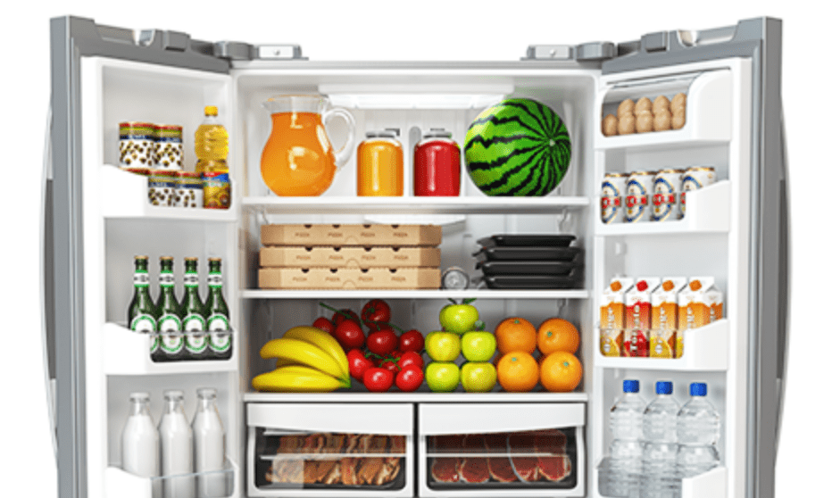

부푼 꿈을 안고 독립을 하였으나
취업난과 코로나 상황에, 3개월 이상
사회와 단절된 채 끼니를 챙기기 어려운

캠페인 참여 건 당 CJ제일제당이
서울시 고립청년을 위해 CJ제일제당 나눔냉장고를
착한 먹거리 로 채워드립니다.
캠페인 참여로 모인 기금은
서울시 청년을 응원하는
청년지원단체 로 기부됩니다.
고립청년과 CJ제일제당 나눔냉장고 캠페인을 댓글로 응원해주세요!
댓글을 남겨 주신 모든 분들께 콩 1개씩 드립니다.
참여 기간 : 2021년 9월 29일 ~ 2021년 11월 8일
콩 지급일자 : 2021년 11월 12일
*무성의, 반복, 악성 댓글에는 콩이 지급되지 않습니다.